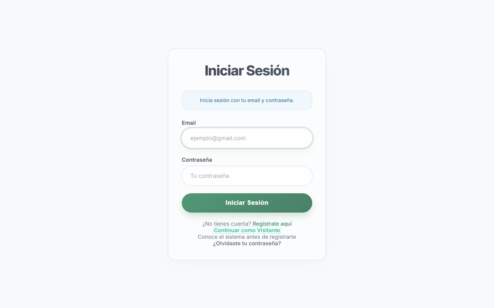
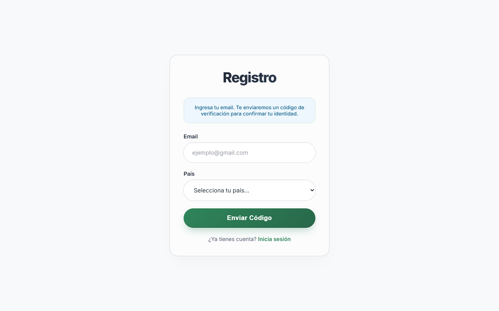
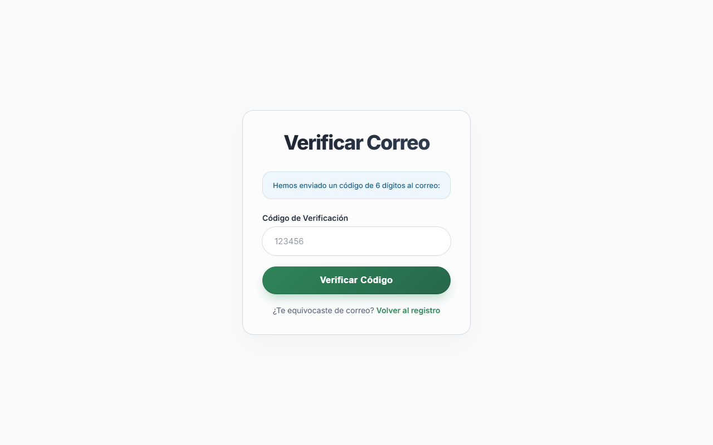
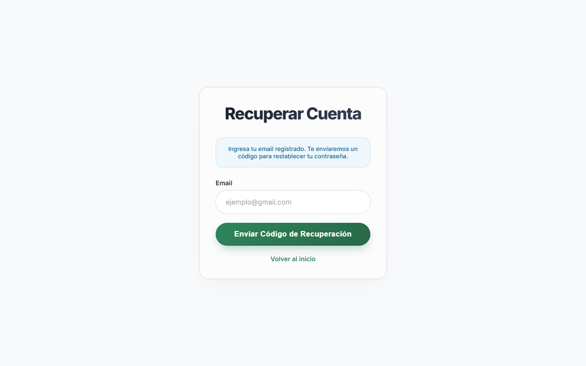
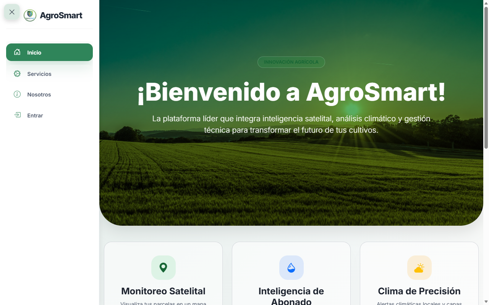
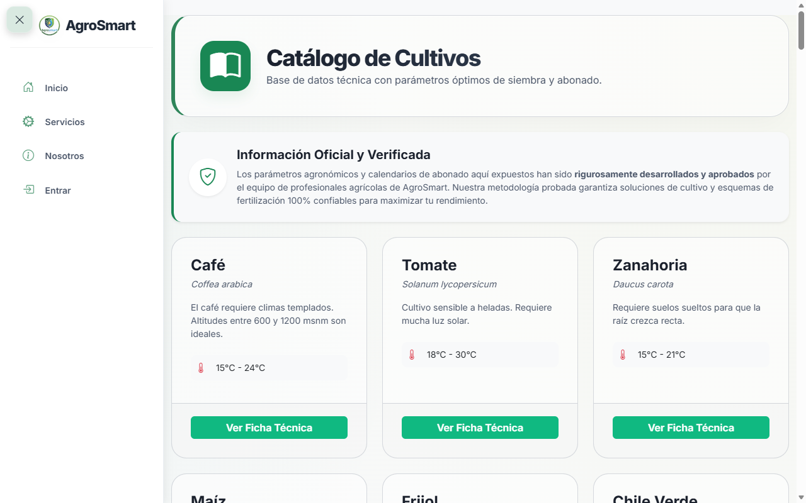
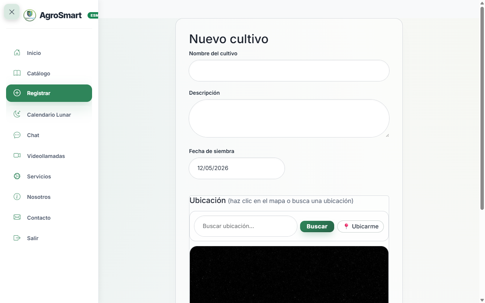
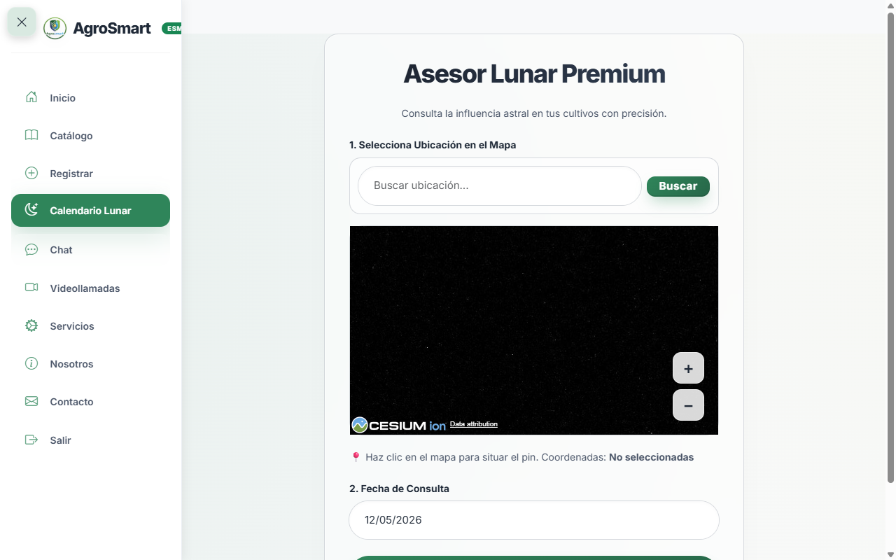
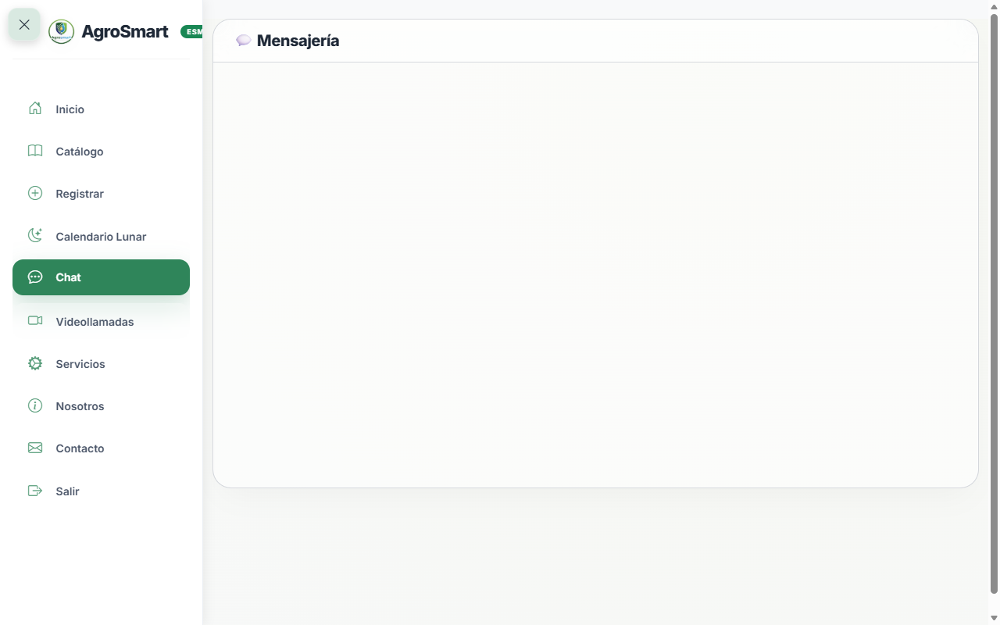
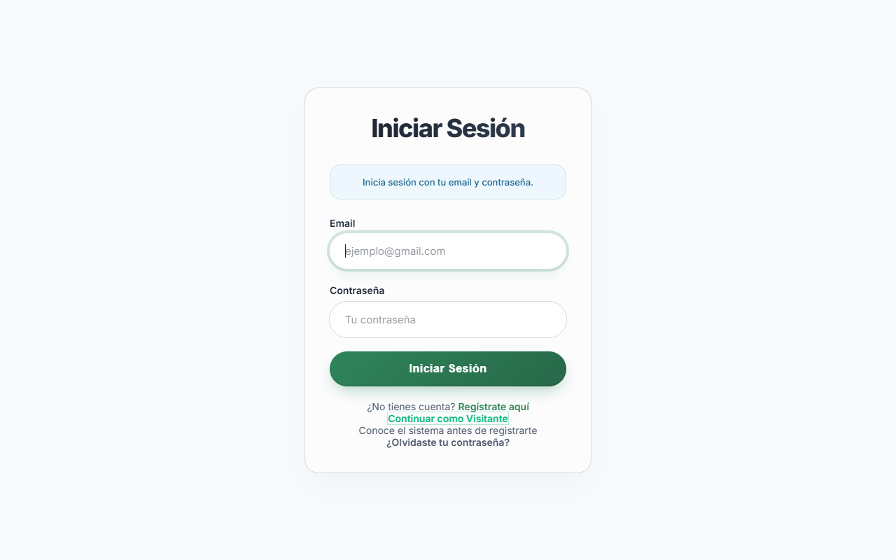

1. Introducción al Sistema
Bienvenido a AgroSmart, la plataforma de inteligencia agrícola diseñada para transformar sus labores de campo mediante tecnología satelital y análisis de datos en tiempo real.
Este ecosistema le permite no solo registrar la historia de sus parcelas, sino obtener asistencia técnica automatizada, notificaciones de fertilización, estudios lunares y contacto directo con su cooperativa o técnicos agrícolas. Este manual le guiará paso a paso por todas las herramientas disponibles para su rol como Agricultor o Productor.
2. Gestión de Acceso y Cuenta
El ingreso a AgroSmart cuenta con niveles de seguridad estrictos para proteger la información confidencial de sus siembras y cooperativas.
2.1. Iniciar Sesión
Si usted ya posee una cuenta registrada por su organización o cooperativa:
- Abra su navegador web y diríjase a la plataforma AgroSmart.
- En la pantalla principal, ingrese su Correo Electrónico y Contraseña.
- Haga clic en el botón verde "Iniciar Sesión".
- Nota: Si es su primer ingreso en un dispositivo nuevo, es posible que el sistema le muestre un cartel de bienvenida confirmando su rol y el plan de licencia de su país.

2.2. Registro y Verificación (OTP)
Si necesita crear una cuenta nueva y su país o asociación lo permite:
- En la pantalla de login, haga clic en el enlace inferior: "¿No tienes cuenta? Regístrate aquí".
- Seleccione su país de residencia e ingrese su correo electrónico personal o de trabajo.
- El sistema le enviará un código de 6 dígitos a su correo. Introdúzcalo en la pantalla de verificación (Código OTP).
- Finalmente, cree y confirme su nueva contraseña segura (mínimo 6 caracteres).


2.3. Recuperación de Contraseña
Si olvida sus credenciales de acceso:
- Haga clic en "¿Olvidaste tu contraseña?" desde la pantalla principal de login.
- Ingrese su correo registrado. Recibirá un nuevo código numérico de seguridad.
- Al validarlo con éxito, el sistema le permitirá crear una nueva contraseña y restaurar su acceso de inmediato.

4. Panel de Control (Dashboard)
Una vez iniciada la sesión con éxito, será llevado a su Dashboard. Esta es la pantalla más completa del sistema y funciona como su centro de mando integral.

4.1. Resumen de Mis Cultivos
En la parte media superior, verá tarjetas con la información resumida de cada una de sus parcelas activas:
- Nombre y Descripción: Tipo de cultivo sembrado y detalles técnicos adicionales ingresados.
- Fecha de Siembra: Calculada de manera automática para llevar el tiempo exacto del ciclo vegetativo.
- Botones Rápidos de Acción:
- Abonado: Le lleva directamente al cronograma y fechas recomendadas para aplicación de fertilizantes o químicos.
- Editar/Ver: Permite cambiar o inspeccionar los datos técnicos de la parcela.
- Eliminar: Borra el registro si la parcela fue cosechada, descartada o reemplazada.
4.2. Mapa Meteorológico 3D Interactivo
La parte inferior del Dashboard incluye un espectacular globo satelital en 3D impulsado por motores geoespaciales de alta precisión.
- Pines y Clusters: Verá hojas verdes marcando la ubicación exacta de sus cultivos. Si hay muchos cultivos cercanos, verá un cluster circular agrupando la cantidad. Al hacer clic sobre los pines, se abrirá un cuadro emergente con información climática y técnica de esa siembra.
- Buscador de Terrenos: Utilice la barra de búsqueda integrada en el mapa para acercar la cámara satelital a sus coordenadas exactas antes de crear un nuevo cultivo.
- Capas de Clima: Si su plan lo incluye y cuenta con conexión, el mapa mostrará en tiempo real nubosidad, precipitaciones y proyecciones de viento sobre sus terrenos.
5. Gestión Inteligente de Cultivos
Esta es la herramienta fundamental de AgroSmart: no solo almacena sus registros agronómicos, sino que automatiza y calcula sus labores de campo.
5.1. Catálogo Técnico
Antes de registrar su tierra, puede visitar la sección Catálogo en el menú. Aquí encontrará la enciclopedia técnica oficial con todos los cultivos soportados por el ministerio o su cooperativa. Verá sus características climáticas óptimas, rendimientos esperados por hectárea y el Plan Estándar de Fertilización.

5.2. Registro de Nuevas Parcelas
Para agregar un nuevo terreno a su mando en la plataforma:
- Haga clic en "Registrar" en su menú lateral izquierdo.
- Ingrese el Nombre del Cultivo (asegúrese de usar un nombre exacto del catálogo oficial, como Maíz, Frijol, Café o Tomate).
- Seleccione la fecha exacta de siembra en el calendario desplegable.
- Elija sus coordenadas en el mapa satelital. Si tiene su GPS encendido en el dispositivo, el sistema puede auto-detectar su posición real en la parcela.
- Al hacer clic en "Guardar Parcela", el sistema vinculará la ficha técnica a su perfil.

5.3. Plan Automático de Fertilización
El mayor beneficio de registrar correctamente su cultivo es la generación automática del Plan de Abonado. Cuando el sistema detecta que usted sembró, por ejemplo, "Maíz", creará en su base de datos todas las fechas en las que debe aplicar fertilizantes, nutrientes o plaguicidas durante los próximos meses, calculando los días transcurridos respecto a la fecha de siembra indicada.
6. Asesor Lunar Premium
AgroSmart honra el conocimiento agronómico tradicional y ancestral, combinándolo con astronomía computacional moderna para garantizar que sus decisiones de siembra, poda y cosecha se realicen en el momento astronómico óptimo.

6.1. Sincronización Astral
- Ingrese a la sección "Calendario Lunar" en el menú lateral.
- Busque sus tierras en el mapa 3D y haga clic para dejar el pin amarillo de referencia geoespacial (esto permite calcular las horas exactas de salida del sol y de la luna para sus coordenadas locales).
- Seleccione la fecha que desea investigar en el calendario y haga clic en "Analizar Ciclo Astral".
6.2. Recomendaciones de Siembra y Cosecha
El sistema le revelará la fase lunar, el porcentaje de iluminación astronómica y las horas exactas de orto/ocaso solar. Con base en esta información científica y empírica:
Ideal para labores de mantenimiento, poda de limpieza y aplicación de abonos o tratamientos en la zona radicular. El crecimiento foliar de las hojas es mínimo en esta fase.
Recomendado para sembrar cultivos que crecen sobre el suelo (tomate, pimiento, maíz, frijol). La savia asciende con fuerza hacia los tallos y hojas.
Ideal para la cosecha de frutos. Las plantas concentran la mayor cantidad de savia, nutrientes y azúcares en la parte superior del follaje y los frutos.
Recomendado para sembrar cultivos de raíz o tubérculos (zanahoria, rábano, papa, yuca). La savia desciende rápidamente de regreso hacia las raíces.
7. Ecosistema de Comunicación
Usted nunca estará aislado trabajando sus tierras. AgroSmart integra potentes herramientas colaborativas para mantenerlo en contacto permanente con su comunidad y expertos agrónomos.
7.1. Sistema de Mensajería y AgroRed
En las secciones "Chat" y "AgroRed", encontrará áreas especializadas para el intercambio de información:
- Chat Directo / Asesoría: Comuníquese individualmente con técnicos o administradores de su cooperativa. Use el buscador integrado para localizar profesionales.
- Grupos Cooperativos: Podrá organizar compras conjuntas de fertilizantes o coordinar logística de envíos con otros agricultores vecinos. El historial se resguarda en la nube y de manera local en su dispositivo.

7.2. Asistencia Técnica por Videollamadas
Característica Exclusiva para Planes Diamante y Esmeralda
Si encuentra una plaga desconocida, enfermedad foliar o necesita inspección agronómica urgente en vivo:
- Navegue a la sección "Videollamadas" en el menú principal.
- Ingrese el ID de la sala proporcionado por su ingeniero técnico o cree una sala nueva para enviar la invitación.
- El sistema conectará su cámara web o la cámara trasera de su dispositivo móvil en tiempo real, permitiendo mostrar la parcela y las hojas al ingeniero agrónomo sin que este deba desplazarse físicamente al terreno.

8. Consideraciones Críticas y Modo Offline
AgroSmart entiende que en zonas rurales y campos agrícolas la señal de internet celular o Wi-Fi puede ser inestable o nula. Si pierde conexión, la aplicación seguirá totalmente activa. Podrá seguir navegando por su Dashboard, revisando el catálogo técnico, agregando registros y consultando el calendario lunar. El sistema almacenará sus datos en la memoria local interna y los sincronizará de forma automática y transparente a los servidores en la nube en cuanto recupere la señal.
Para mantener la seguridad del ecosistema, el incumplimiento reiterado de normas agronómicas de la cooperativa o el uso indebido del chat comunitario puede conllevar a una suspensión temporal de su cuenta por parte de un administrador gubernamental o cooperativo. Si esto ocurre, el sistema le redirigirá automáticamente a una pantalla de seguridad desde donde podrá enviar una solicitud formal de apelación para restaurar su licencia.
© 2026 AgroSmart Corporation. Infraestructura Agrícola Confidencial. Todos los derechos reservados.
Volver al inicio del manual